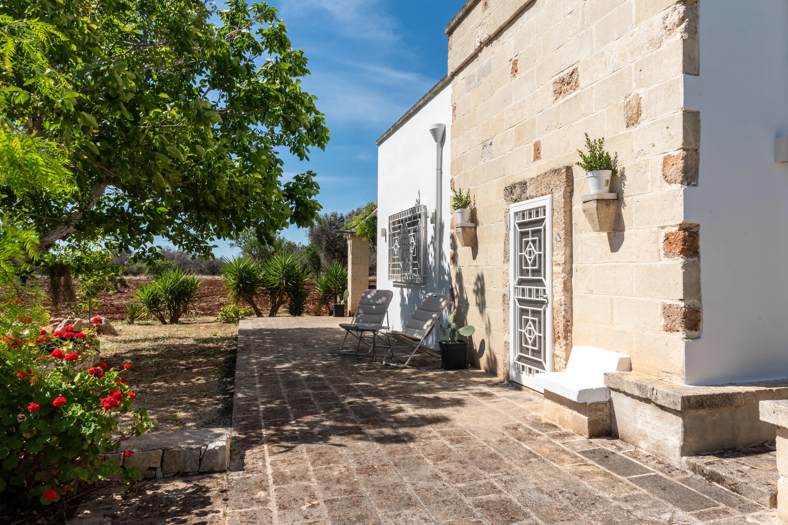
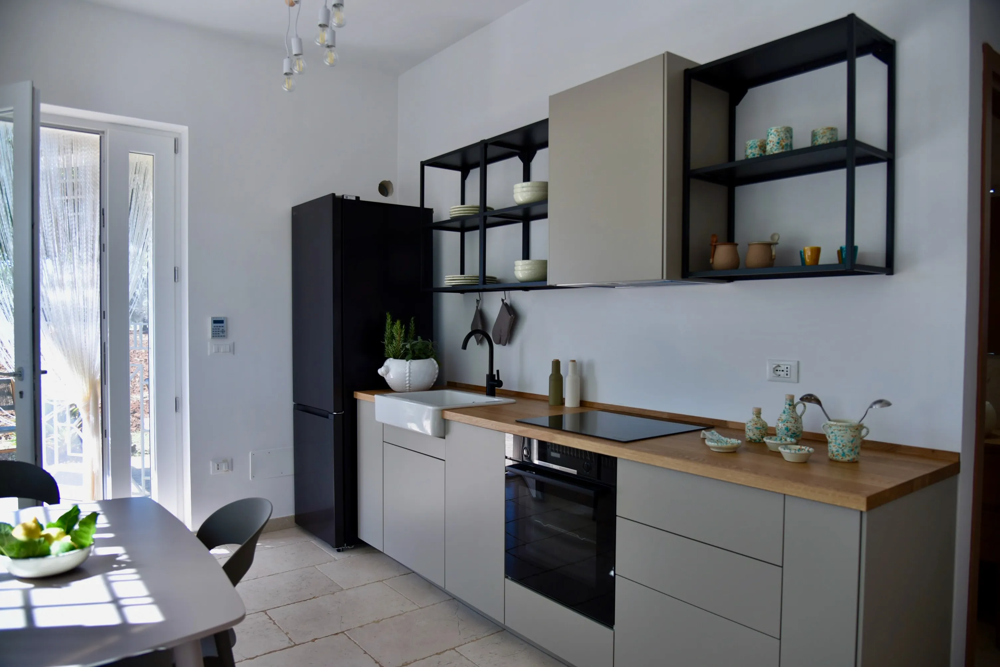

A restored Apulian lamia surrounded by olive trees.
The Salento “lamia” is an ancient rural structure, typically with a square or rectangular floor plan and featuring robust barrel or star‑shaped vaults, built in stone or tuff.
Staying in a Lamia means experiencing Puglia in an authentic way: rediscovering slow living, a close connection with nature, and an architecture that responds to the climate. It is a small example of spontaneous sustainability, where every stone tells the story of a welcoming and generous land.

The lamia features a charming tuff facade with clean, minimal lines and an elegantly understated character, surrounded by a private outdoor area with ancient olive trees, fruit trees, and traditional dry‑stone walls.
The extensive 8,000sqm property is the ideal place for a relaxing holiday immersed in nature, thanks to the outdoor patio overlooking the gentle surrounding countryside, equipped with tables, chairs, and comfortable loungers. In the shade of the wisteria, you can enjoy slow, restorative breakfasts, while on warm summer evenings it becomes the perfect setting for outdoor dinners and moments of pure relaxation.

The interiors of the lamia welcomes you with an intimate, authentic atmosphere, where every element is designed for maximum comfort.
The kitchen, both comfortable and functional, is crafted with natural materials and warm tones: wood and ceramic blend into a space that is essential yet welcoming, ideal for preparing and sharing meals with family.
The bathroom, spacious and filled with natural light, features a large shower and is equipped with everything you need to recharge after a warm summer day.

The bedroom preserves its original architecture: the thick walls built with local stone offer a natural coolness, while the barrel vault reflects the craftsmanship of master stonemasons.
Every corner is designed to let you experience an authentic connection with nature, in a space that is simple, intimate, and thoughtfully curated. We chose local craftsmanship, with finishes that reflect our territory, to offer you an authentic experience made of small stories and a big heart.